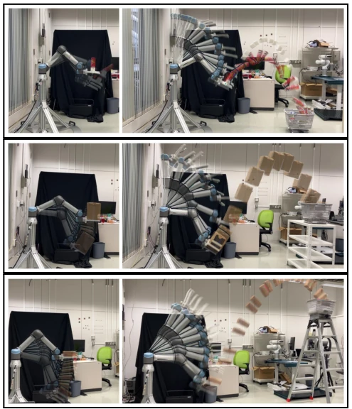
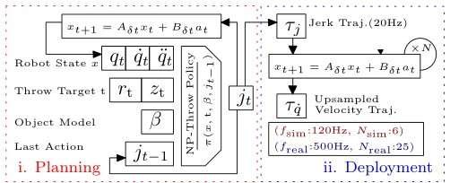
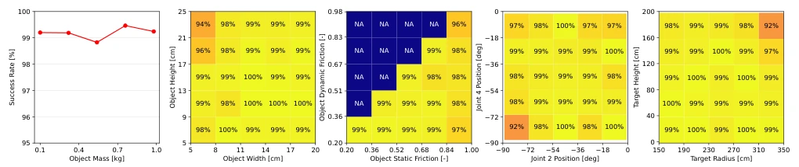
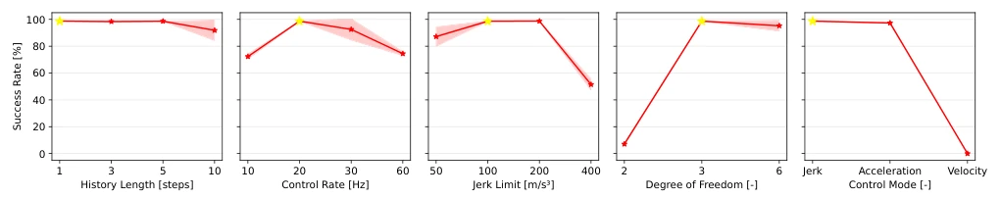
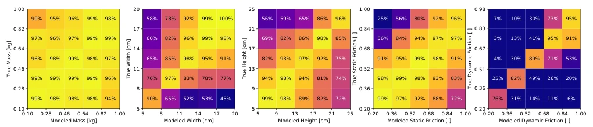
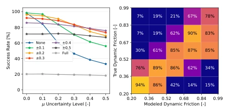

This paper pulls non-grasp throwing out of the "quagmire of mathematical modeling" and directly applies RL, with truly stunning results. A 97% real-world success rate is simply "state-of-the-art" behavior in the robot throwing field, especially for an industrial arm like UR5e throwing 3.5 meters, which was unimaginable with SQP optimizers before. However, the authors did not hide anything, explicitly stating extreme sensitivity to the dynamic friction coefficient, which counts as digging a pit for future researchers: tuning parameters in simulation runs fine, but if the friction coefficient is not measured accurately on the real machine, it fails. Additionally, although planar throwing is stable, 3D scalability is questionable, after all the real world is not a 2D plane. Overall, this is a successful attempt of "trading compute for model accuracy", but the pain point of friction coefficient is not yet thoroughly solved, future still relies on smarter system identification.
Robot throwing can extend workspace, but non-grasp mode (using a tray) is friendlier to large/heavy/soft objects. Existing methods mostly rely on model-based optimization, such as dynamic grasp [5, 6, 7, 8], assuming single contact mode or low-dimensional trajectory parameterization (such as B-splines [5, 8]). This leads to constrained solution space, and SQP solver is sensitive to initial values, prone to local optima, difficult to handle complex sliding/rolling mixed contact. Especially for non-grasp scenarios, lacking grasp force constraints, kinematic/dynamic constraints are harder to satisfy. Existing learning-based methods mostly target grasp throwing [1, 18], direct migration to non-grasp scenarios faces long-horizon contact dynamics challenges. Therefore, a RL method that does not rely on fixed contact assumptions and can implicitly learn mixed contact behavior is needed, to break through the expressiveness bottleneck of traditional optimization.

Fig. 1: NP-Throw enables planar non-prehensile throwing of generic objects to distant and elevated targets. Its sliding-based release mechanism avoids the infeasible fast decelerations used by dynamic-grasping approaches. Top (200 cm, 15 cm): Multiple objects, including a tall chips can and a small cube. Middle (250 cm, 105 cm): Large box. Bottom (300 cm, 185 cm): Heavy wood block. Videos: https://tinyurl.com/np-throwing.
Overall adopts offline planning + online execution RL framework. MDP state includes robot joint state, object model parameters and target position, action space designed as joint jerk, generating smooth velocity commands via upsampling. Policy network is MLP, trained using PPO algorithm. Core innovations lie in: 1) Implicitly handling mixed contact modes, no need for preset contact state machine, RL automatically discovers slip/roll release mechanism, overcoming traditional dynamic grasp model's assumption of fixed contact points; 2) Addressing Sim-to-Real gap, adopting minimum jerk system identification to calibrate robot dynamics, and training uncertainty-aware policy to mitigate object modeling errors, especially dynamic friction influence; 3) During planning recursively evaluate policy to generate Jerk trajectory, during deployment track at high frequency, balancing computational efficiency and control accuracy. This design avoids traditional optimization's strong dependency on contact models, utilizing RL's generalization ability to adapt to different objects and friction conditions. Additionally, reward function includes position error, velocity-oriented and regularization terms, ensuring trajectory smooth and fast.

Fig. 4: Throwing trajectory planning using the NP-Throw policy. Given an object model β, throwing target t = (rt, zt), and initial joint configuration x, the jerk trajectory is generated offline by recursively evaluating the policy. The resulting trajectory is upsampled into high-rate velocity commands for execution in simulation and on real hardware.
Simulation test 12288 configurations, success rate 99%. Real world tested on UR5e 5 objects, 12 targets, average success rate 97%. Targets furthest 350cm, highest 185cm. Ablation experiments show Jerk action better than velocity/acceleration, history length increase no gain. Sensitivity analysis shows policy insensitive to mass error, but extremely sensitive to dynamic friction coefficient (Fig 7). Uncertainty training (Fig 8) significantly improved robustness under friction error. Compared to baseline (such as Upright [21]), RL method avoids solver failure problem. Failure cases mostly originate from physical infeasibility caused by extreme targets or friction modeling error amplification.

Fig. 5: Performance analysis of NP-Throw policy for in-distribution configurations. The success rate is shown as a line plot for object mass and as 2D histograms for pairs of configuration variables. Entries with dynamic friction higher than static friction are not applicable (N/A). The policy achieves consistently high success rates except under extreme combinations of object size, joint state, and throwing target.

Fig. 6: Ablation study across different design axes. Success rates (mean and standard deviation) are computed over 4096 configurations and 3 random seeds. Our proposed policy configuration achieves the highest success rate, highlighted by a yellow star.

Fig. 7: Evaluation of policy robustness to modeling uncertainties, measured by success rate. As the estimated object model (x-axis) deviates from the true model (y-axis), performance is minimally affected by mass uncertainty but is most sensitive to dynamic-friction errors.

Fig. 8: Left: Performance of uncertainty-aware policies starting from zero uncertainty training (“None”) to fully random (“Full”) for different levels of friction uncertainty. Right: Sensitivity to dynamic friction for the policy trained with ±0.3 friction noise.